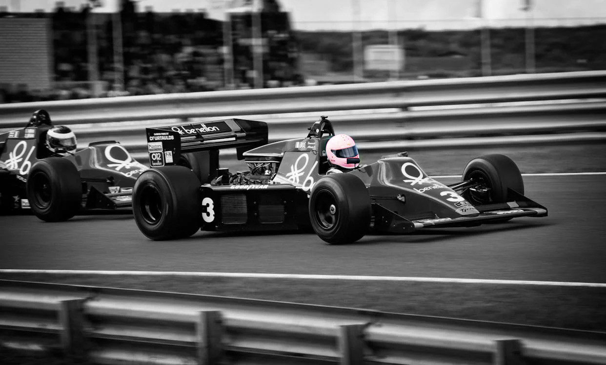

Racing
In a surprising turn of events, Santa Cruz's picturesque coastline became the backdrop for a thrilling high-speed race yesterday. Custom-built formula cars roared through the city's streets, navigating tight corners around the Beach Boardwalk and accelerating along West Cliff Drive. As the cars sped past, local businesses seized the opportunity to capitalize on the event, setting up food stalls and merchandise booths to cater to the enthusiastic crowd.The sun shone brightly overhead, creating the perfect backdrop for the day’s festivities, while the roar of the engines drowned out the waves crashing on the shore, turning Santa Cruz into a thrilling hub of excitement.